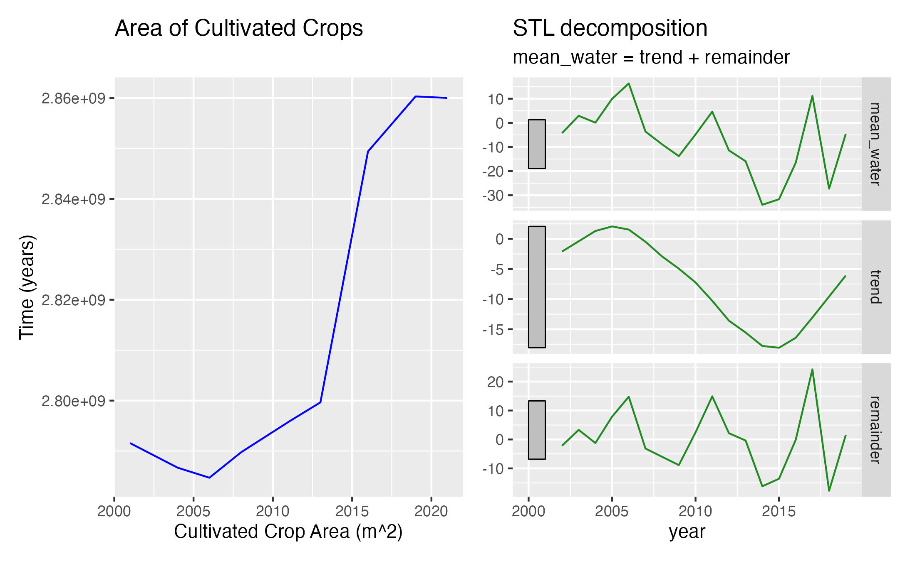
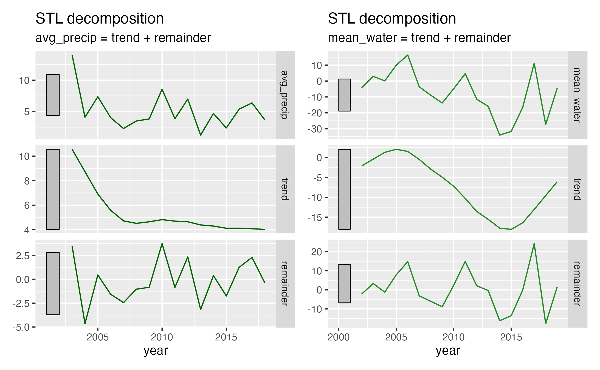
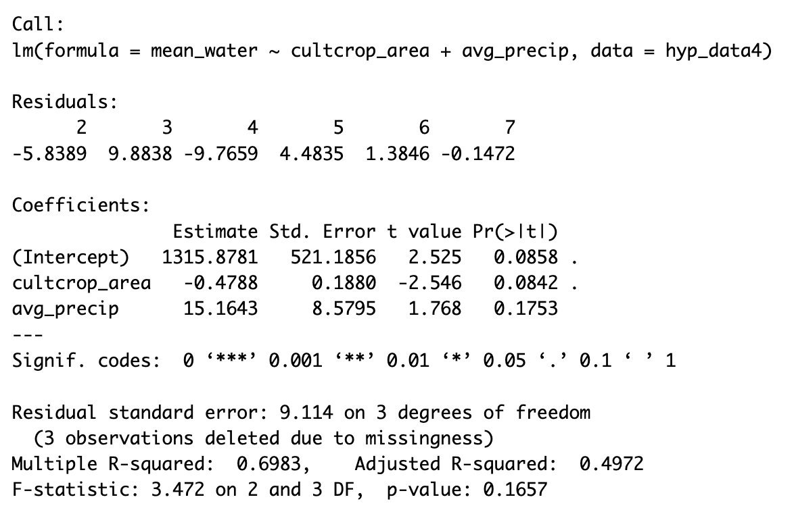

Impact of Land Use Change on Water Storage in the Yolo County Area
Motivation
After high school, I knew I wanted to leave Santa Barbara and gain some independence in a new town. When applying to colleges I fell in love with the small town of Davis, California. While at UC Davis, I got my undergraduate degree in Biological and Agricultural Engineering. One of the things I enjoyed about studying agriculture is how interdisciplinary the field is, within agriculture you can specialize in genetic engineering, biology, chemistry, climate, sustainability, etc.
As populations continue to grow, pressure for the agricultural industry to keep up with increasing food demands while reducing resource consumption grows with it. Since Davis is typically known to the students as “Ag Town”, I thought it would be interesting to see how the land usage of cultivated crops has changed over time. Similarly, I hypothesized that there would be a negative correlation between area of cultivated crop land, and water storage.
This analysis aims to see if there is a correlation between the area of cultivated crops and water storage. This analysis will involve nonlinear relationships in linear regression models, multiple linear regressions, evaluation of omitted variables bias, hypothesis testing, and time series decomposition.
For this analysis, my null and alternative hypotheses are as follows:
H0: There is no correlation between agricultural land use change and water storage in the Yolo County area.
HA: There is a correlation between agricultural land use change and water storage in the Yolo County area.
Data
There were four data sources used for this analysis.
National Land Cover Data:
The Multi-Resolution Land Characteristics Consortium has put together a National Land Cover Database for the United States. The land cover database is updated every 2-3 years with a pre-processed land cover raster. The land cover and land cover change data has a resolution of 30m with a 16-class legend. For this analysis, I accessed the Continental United States data for all years. The all-years dataset includes the years 2003, 2006, 2008, 2011, 2013, 2016, 2019, and 2021. The data download can be found here:
Multi-Resolution Land Characteristics Consortium. (n.d.). NLCD land cover (CONUS) all years. NLCD Land Cover (CONUS) All Years. https://www.mrlc.gov/data/nlcd-land-cover-conus-all-years
NASA - GRACE Satellite Data
The GRACE twin Satellites project is run by NASA, and works to estimate changes in water storage. These satellites work by measuring small changes in the Earth’s gravity due to changes in weight. The changes in gravity are then processed by JPL to get a Water Equivalent Thickness Anomaly. The Water equivalent thickness describes the total water in the soil as a layer of water sitting on top of the soil of a given thickness in centimeters. The anomalies are calculated using the measurements from Jan. 2004- Dec. 2009 as the baseline. The data can be accessed here:
NASA. (n.d.). Grace. NASA. https://grace.jpl.nasa.gov/data-analysis-tool/#b=ESRI_World_Imagery&l=OSMCoastlines(1)&vm=2D&ve=-138.0121190906666,30.247546877703407,-95.6596042881563,54.8573720600865&pl=false&pb=false&tr=false&d=2003-06-15&tlr=months
Average Precipitation Data
The California Department of water Resources has monthly precipitation data for individual stations within California. For this anlysis I used the Woodland station operated by the National Weather Service. I chose this station because I recognized Woodland as a nearby town to Davis where many students go shopping. I used this stations precipitation data as a proxy for rainfall in the Yolo County Area. The data can be found here:
California, S. of. (n.d.). CDEC Web Applications. California Data Exchange Center. https://cdec.water.ca.gov/dynamicapp/QueryMonthly?s=WDL&end=2023-12&span=5years
California Counties Shape File
In order to crop the continental US data from NCLD to my area of interest, I downloaded the shapefiles for California and all of the counties. These shapfiles are available for download via the California Open Data Portal. The data is available for download here:
CA geographic boundaries. CA Geographic Boundaries | CA Open Data. (n.d.). https://lab.data.ca.gov/dataset/ca-geographic-boundaries
Analysis
My analysis involved three main steps: data exploration and cleaning, data visualization, and linear regression modeling.
Data Exploration and Cleaning
In order to prepare the NLCD data for my experiment, I needed to load in the data, crop it to my area of interest (Yolo County) using the CA county shapefiles, and then create a for loop that runs zonal statistics for each available dataset. This allowed me to create a dataframe that showed the total area of cultivated cropland from 2003-2021.
I was easily able to download the water equivalent thickness anomaly data from the GRACE interactive site, and specify the area of interest before downloading the data. I was able to use group_by() and summarize() with some other simple manipulations to plot the annual average water equivalent thickness anomaly in centimeters which I simplified to the variable name mean_water. After downloading the data, I performed an STL decomposition so I could see any trends in the water storage data.
Similarly, I was easily able to download the monthly precipitation data in 5-year increments from the California Department of Water Resources website. I used to rbind() function to combine three datasets into one dataframe that included data from 2003-2019. From this dataframe I was able to calculate the annual average precipitation in centimeters. I then performed an STL decomposition so I could see any trends in the precipitation data.
Data Visualization
Now that I had a few cleaned and wrangled datasets, I was able to visualize the data before performing linear regressions. The two visualizations I used are shown below in Figures 2 and 3.

The most notable result from this graph is the clear negative correlation between the area of cultivated crops and the trend of water storage in the STL decomposition.

What I found most interesting about these graphs is that the remainders of these two decompositions seem more similar that the trends.
These two visualizations provided some intuition that the cultivated crop land is responsible for more of the overall trends seen in the water storage but the annual rainfall accounts for more of the noise/short term fluxes in water storage.
Linear Regression Modeling
In order to try to find the best estimates from my linear regression models, I performed multiple analyses.
The first linear regression was a simple linear regression showing the correlation between the water storage and cultivated crop area.
The next set of linear regressions used polynomials for the cultivated crop variable. I ran two experiments looking at a quadratic and cubic equation for cultivated cropland.
In order to test for omitted variables bias, I tried to improve my model by running two multiple linear regression models that used changes in developed areas and annual average precipitation as the additional variable in the multiple linear regression model.
Results
After running a variety of linear regressions, I found that the model with the best fit for my data was a multiple linear regression model with cultivated crop area and annual average precipitation as the variables. Figure 4 shows a summary of the multiple linear regression output with the best adjusted R-squared value and best p-values for my coefficient estimates.

It is worth noting that the Adjusted R-squared value is 0.4972, which implies that 49% of the variation in my model could be explained by just cultivated cropland use change and annual precipitation with a penalty for a more complex model.
Based on the results of my summary above, I was not able to reject the null hypothesis at a significance level of 0.5. While I could not reject the null hypothesis, these p-values are not so high that they imply there is no relationship between these variables. The fact that I was able to increase my adjusted R-squared value by adding in annual precipitation implies that there was omitted variables bias in the simple linear regression. This makes sense because the total water storage is likely affected by many factors that were not accounted for in this short analysis.
Future Work
If I had more time to clean more data and run more analyses, I would try to add more variables to this analysis and find out which of a larger set of variables has the largest impact on the water storage in the Yolo County Area.
Code Availability
The code for all the data cleaning, visualizations, and linear regressions is available on my Github here.
Citations
CA geographic boundaries. CA Geographic Boundaries | CA Open Data. (n.d.). https://lab.data.ca.gov/dataset/ca-geographic-boundaries
California, S. of. (n.d.). CDEC Web Applications. California Data Exchange Center. https://cdec.water.ca.gov/dynamicapp/QueryMonthly?s=WDL&end=2023-12&span=5years
Multi-Resolution Land Characteristics Consortium. (n.d.). NLCD land cover (CONUS) all years. NLCD Land Cover (CONUS) All Years . https://www.mrlc.gov/data/nlcd-land-cover-conus-all-years
NASA. (2018, February 22). Grace. NASA. https://grace.jpl.nasa.gov/mission/grace/
NASA. (2023, March 7). Overview - monthly mass grids. NASA. https://grace.jpl.nasa.gov/data/monthly-mass-grids/
NASA. (n.d.). Grace. NASA. https://grace.jpl.nasa.gov/data-analysis-tool/#b=ESRI_World_Imagery&l=OSMCoastlines(1)&vm=2D&ve=-138.0121190906666,30.247546877703407,-95.6596042881563,54.8573720600865&pl=false&pb=false&tr=false&d=2003-06-15&tlr=months
Stonestrom, D. A., Scanlon, B. R., & Zhang, L. (2009, March 3). Introduction to special section on impacts of land use change on water ... Introduction to special section on Impacts of Land Use Change on Water Resources. https://agupubs.onlinelibrary.wiley.com/doi/pdf/10.1029/2009WR007937
Citation
@online{childers2023,
author = {Childers, Heather},
title = {Impact of {Land} {Use} {Change} on {Water} {Storage} in the
{Yolo} {County} {Area}},
date = {2023-12-15},
url = {hmchilders.github.io/blogs/2023-12-14},
langid = {en}
}